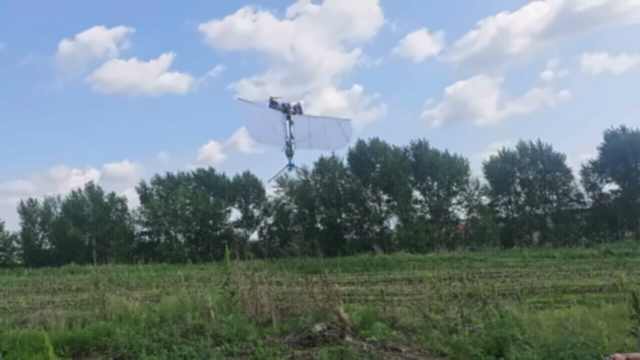

Synergistic disturbance rejection for tail-sitter UAV hover mode and transition phase: vectoring rotors and bioinspired phase-shifting wings

Outdoor flightOverview
This study combines vectoring rotors with independently adjustable phase-shifting wings to improve disturbance rejection during tail-sitter hover and transition. The proposed aircraft, aerodynamic model, and controller are evaluated through comparative simulations and outdoor flight tests.
Main contributions
A phase-shifting wing tail-sitter configuration
A tailless aircraft combines two vectoring rotors with bioinspired morphing wings. A self-locking wing mechanism reduces servo torque requirements while reusing the actuators across flight modes.
Coupled aerodynamic and multibody modeling
The model accounts for the coupled translational and rotational aerodynamics of moving wings and the non-minimum-phase response introduced by rotor vectoring.
Full-attitude synergistic control on SO(3)
An integral-driven allocation strategy dynamically distributes control effort between wings and rotors according to their response characteristics, supporting disturbance rejection throughout hover and transition.
Simulation comparisons and outdoor validation
Ten independent random-wind cases compare disturbance rejection in simulation. Prototype tests demonstrate hover and transition under natural winds up to Level 3, including a reported hover-to-cruise transition of approximately 3.3 seconds.
Summary based on the published paper, Sections 1–5.